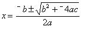
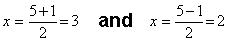
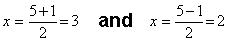
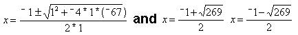

Sheri uses the quadratic formula to find the missing base
for Don's age
Don had Sheri solve x2
- 5x +
6 = 0 using the quadratic formula. She
knew what the two answers were {2,3}, but Don helped her to substitute in the
formula, then get the two answers:
Don
had Sheri list what a, b and c are in x2
- 5x + 6 = 0; a = 1, b=
- 5 and c=6. a=1
was not obvious; they talked about what times x2 = x2
? 1. Don substituted these values of a, b, and c into the formula:
 They
got The ' means
"plus or minus" and this gives the two answers as shown above. Sheri
then solved another quadratic equation (for which she knew the answers), using
the using the formula, then solved x2
+ x + 4 = 71 or x2 + x - 67 = 0 to
find the base for Don's age:
They
got The ' means
"plus or minus" and this gives the two answers as shown above. Sheri
then solved another quadratic equation (for which she knew the answers), using
the using the formula, then solved x2
+ x + 4 = 71 or x2 + x - 67 = 0 to
find the base for Don's age:

These two exact answers are approximately 7.700609733...
and -8.700609733. Sheri got the first answer, but didn't
have time to get the second one. Notice that in using the calculator to do find
the base earlier, Sheri got 7.7, which was very close to the answer using the
quadratic equation. So Don's "age" of 114 is in base 7.7 to get his
real age of 71!
There are many good questions that Don thinks
of now..what do you think?
Sheri
writes 64 using exponents
Sheri
solves the quadratic equation x2 - x - 1 = 0
Sheri
finds the base for Don's age of 114? = 7110
Sheri
finds the measure of an inscribed angle
Sheri
uses binary numerals to make the Magic Number Game cards
Sheri
changes the shape of a dog using matrices
Sheri
reduces the size of a shell using the pantograph
Sheri
moves a parabola and finds the equation
Sheri
finds the ratio of The Volume of a Pyramid / The Volume of a Cube (3 ways)
Sheri
works with the sand pendulum
Sheri
figures out a rule for The Tower Puzzle
Sheri
starts Trig
To
other discoveries
To order
Don's materials
Mathman home